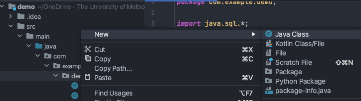
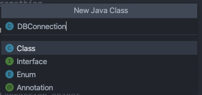
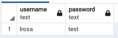
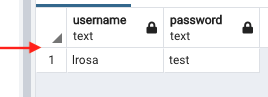
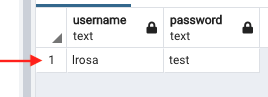
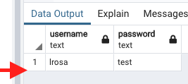

Introduction to Java and PostgreSQL#
This is a demo for students who are new to using Java to query an SQL database.
Important
Before attempting these steps, make sure you have completed Steps 1-7 in Setup Development Environment.
Opening a Connection#
Create a class named DBConnection:


Copy the below into the new class:
import java.sql.*;
public class DBConnection {
private static final String url = "jdbc:postgresql://localhost:5432/postgres";
private static final String user = "postgres";
private static final String password = "";
}
Replace the URL, user, and password with the details of your local PostgreSQL instance.
We’ll demonstrate how to create a connection to the database by using a connection method:
public static Connection connection() {
Connection conn = null;
try {
DriverManager.registerDriver(new org.postgresql.Driver());
conn = DriverManager.getConnection(url, user, password);
} catch (SQLException e) {
//do something
}
return conn;
}
This method returns an object of type java.sql.Connection (i.e., it is a method that can be called upon from
anywhere else to return a connection to the database).
We’ll demonstrate an example of this.
Querying the Database#
I have created a database table called user with two rows (username and password) in order to demonstrate how to query the database using Java.

Create another method in the Connection class called query(). We will use this method to query a
username and password in the database:
public static void query() {
String sql = "SELECT * FROM users WHERE username = ? AND password = ?;";
PreparedStatement findStatement = null;
ResultSet rs = null;
Connection conn = null;
String username = "lrosa";
String userPassword = "test";
try {
// This is using the method we created above to return a connection to the database to execute the query
conn = connection();
findStatement = conn.prepareStatement(sql);
findStatement.setString(1, username);
findStatement.setString(2, userPassword);
findStatement.execute();
rs = findStatement.getResultSet();
if (rs.next()) {
System.out.println("Username and password are correct.");
} else {
System.out.println("Username and/or password are incorrect.");
}
} catch (SQLException e) {
//do something
}
}
You can see above, we are creating a query to search for a user in the database with username = lrosa and
password = test.
This will return a result as the username and password have been correctly specified and exist in the database.
ResultSet#
We have used a ResultSet above to view the entries returned from the database.
ResultSet is used to store the data returned from the database table after the execution of SQL
statements. The object of ResultSet maintains a cursor pointed at the result data - by default, the cursor is
positioned before the first row of the result data.
The next() method is used to move the cursor to the next position (row) in a forward direction.
I.e., when the data is first returned, the cursor of the ResultSet is at position 0:

Calling rs.next() returns TRUE (as there is >0 rows) and moves the cursor to position 1:

Now you are pointing at row 1 and you can directly pull out the values for username or password.
There are 2 ways of doing this, you can query based on column name or column number.
First, let’s demonstrate column name (copy this into the query() method you made above):
if (rs.next()) {
String username = rs.getString("username");
String password = rs.getString("password");
System.out.println(username + "," + password);
}
To query based on column number:
if (rs.next()) {
String username = rs.getString(1);
String password = rs.getString(2);
System.out.println(username + "," + password);
}
Now you can use these details to create User objects in your application (or whatever else).
At this point, you have moved the cursor to position (row) 1 and the ResultSet only contains 1 row.
That means, if you try to call if (rs.next()) again, it will return FALSE as the ResultSet pointer has now
moved past the last row of the data returned from the database:

Note
Alternatively, if you expect to pull more than one row from the database, you can replace the
if (rs.next()) with while (rs.next()) and the while statement will continue
executing until the ResultSet reaches the final row and returns FALSE.
Closing a Connection#
It is very important that you close resources after using them, especially as the dev version of Render only has 10 threads (processes) it can use to create connections to the database. I.e., if you create more than 10 connections to the database without closing them, your application will freeze and hang indefinitely (until Render/PostgreSQL decides to terminate the already executed threads - this could be minutes, hours, days, who knows).
To do this, after each query to the database, add a finally clause (using the same example as above):
try {
// This is using the method we created above to return a connection to the database to execute the query
conn = connection();
findStatement = conn.prepareStatement(sql);
findStatement.setString(1, username);
findStatement.setString(2, userPassword);
findStatement.execute();
rs = findStatement.getResultSet();
if (rs.next()) {
System.out.println("Username and password are correct.");
} else {
System.out.println("Username and/or password are incorrect.");
}
} catch (SQLException e) {
//do something
} finally {
try {
if (rs != null) {
rs.close();
}
if (findStatement != null) {
findStatement.close();
}
if (conn != null) {
conn.close();
}
catch (SQLException throwables) {
//do something
}
}
}